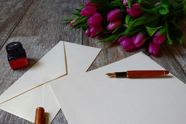

Escribir una carta de puño y letra es recordar viejos tiempos con personas lejanas, por diversos motivos: una declaración de amor, romper una relación amorosa, una confesión inconfesable o una buena noticia. Aunque no lo creas la escritura manual estimula el cerebro y fomenta la memoria
Mantener la motivación y el entusiasmo en tu equipo es una tarea dura, que requiere constancia y continuas dosis de energía. Pero es un esfuerzo que no puedes abandonar en ningún momento.
Es por ello que el 7 de febrero celebramos el Día de Mandar una Carta a un Amigo ¡Vivan los amigos por correspondencia!